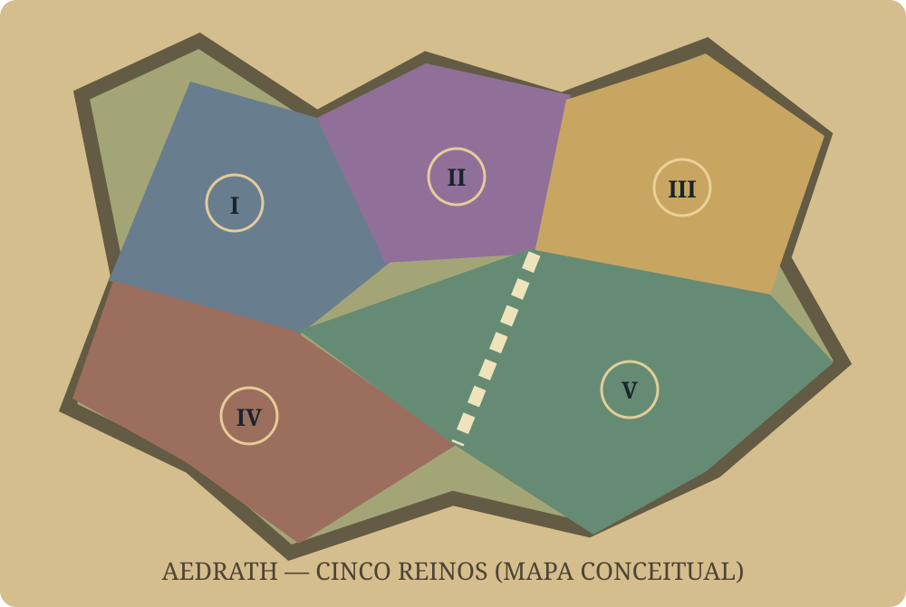

⚔️
Combate Action 3D
Terceira pessoa com câmera ajustável, mira ativa, esquivas, dash, cambalhotas e teleporte curto conforme a classe. Primeira pessoa planejada para expansão.
Cinco reinos. Milhares de decisões possíveis. Um RPG online 3D onde aventureiros, mercenários, governantes e habitantes transformam a economia, a política e o destino do continente.
CONCEITO / PRÉ-PRODUÇÃO — não é um jogo disponívelDepois da Grande Ruptura, um antigo império deu lugar a cinco reinos. Famílias reais mantêm um pacto frágil, enquanto vilarejos livres, ruínas antigas e terras sem senhor abrem caminhos para novas histórias.
Os reinos não são simplesmente bons ou maus. Seus habitantes trabalham, viajam, constroem, disputam recursos e podem mudar seus próprios destinos. A história avançará com expansões e acontecimentos do mundo.
5 reinos1 continenteMundo persistente
O conceito conecta combate, personagens, política, economia e memória. Cada sistema influencia os demais, sem depender apenas de eventos roteirizados.
Terceira pessoa com câmera ajustável, mira ativa, esquivas, dash, cambalhotas e teleporte curto conforme a classe. Primeira pessoa planejada para expansão.
Habitantes podem ganhar experiência, exercer profissões, visitar dungeons, formar famílias, viajar, negociar e reagir aos acontecimentos.
Todos começam neutros. Ações moldam a tendência ao bem ou ao mal; reputação pessoal, amizade, rivalidade e confiança evoluem separadamente.
Aventureiros aceitam missões de coleta com entregas parciais. Mercenários oferecem escolta e combate. Assassinos possuem uma instituição clandestina; perseguições contratadas por NPCs ficam para expansão.
Governantes administram impostos, guardas, fortalezas, hospitais, oficinas e vilarejos. Jogadores poderão obter títulos e reivindicar terras quando o sistema for liberado.
Conflitos declarados com preparação de 5 a 10 dias, recrutamento, materiais, invasão de fortalezas e conquista do trono, liberados por expansão.
Compra, venda e aluguel de terrenos por 5 a 30 dias. Casas, oficinas, forjas, alfaiataria, artesanato e lojas administradas pelos habitantes.
Conversas combinam profissão, emoção, conhecimentos, reputação, memórias e acontecimentos. Um mesmo mercenário pode ser leal, vingativo ou reconciliado.
Guardas remunerados patrulham, investigam crimes e protegem as cidades. As leis e relações entre personagens influenciam consequências.
Bronze, prata e ouro circulam entre habitantes, mercadores, guildas, lordes e tesouros reais. Cada reino começa conceitualmente com 100 milhões de ouro em seu tesouro, paga despesas e arrecada impostos. Recursos e moedas não surgem arbitrariamente nas transações.
100 bronze = 1 prata · 100 prata = 1 ouro.
Uma moeda premium separada, de nome provisório Cristais, viabilizará personalizações e serviços de conta. O marketplace de itens entre jogadores prevê comissão de 20% em Cristais ao reino associado à transação; a loja oficial não paga essa comissão.
Minas, dungeons, produção, comércio e consumo movimentam cada cidade. NPCs possuem estoques, moedas, necessidades e objetivos.
Venda inicial de terrenos: 50% para a coroa e 50% para o lorde. Preços mínimos regionais, garantia de pagamentos e controle contra manipulação.
Skins originais, ampliações de inventário, armazém, peso e slots de personagem. A conta começa com um personagem; negociação de personagens fica para expansão futura.
Este portal apresenta o conceito definido até agora. A futura produção considera Godot e Blender, com apoio do Codex, sempre priorizando código e ferramentas gratuitas. Nenhum cliente jogável foi anunciado.